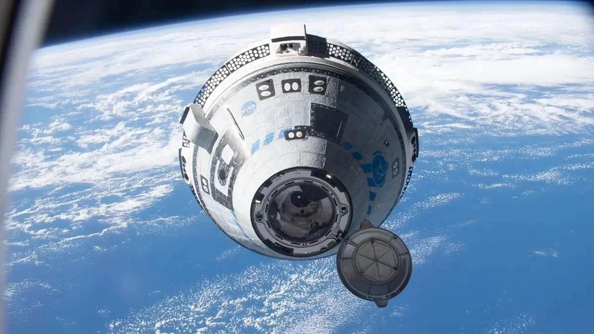

Boeing mekiğinin arızalanması sonucu uzay istasyonunda mahsur kalan NASA'nın iki astronotunun dönüşü, SpaceX'in gelecek yıl şubattaki seferine kadar ertelenebilir.
5 Haziran'da Dünya'dan ayrılan Starliner mekiği ve ekibinin dönüş tarihi, geçtiğimiz günlerde yine ertelendi. Haziranın başında uzaya ulaşan Starliner ekibinden Butch Wilmore ve Suni Williams, bir süre daha uzay istasyonunda kalmaya devam edecek.
Boeing mekiğinin arızalanması sonucu uzay istasyonunda mahsur kalan NASA'nın iki astronotunun dönüşü, SpaceX'in gelecek yıl şubattaki seferine kadar ertelenebilir. Yetkililer, Starliner mekiğindeki sorunun sanılandan daha karmaşık olduğunu belirtirken, sorunun giderilmesini bekleme seçeneği dışında, SpaceX'in Şubat 2025'teki seferinde 4 astronot yerine iki koltuğun boş olarak gönderilip Wilmore ile Williams'ın bu mekikle getirilmesi ihtimalinin de seçenekler arasında olacağını kaydetti.
NASA'nın ticari program yöneticisi Steve Stich, mahsur kalan astronotlar Wilmore ve Williams'ın Dünya'ya dönüşü için planlanan seferler dışında ayrı bir SpaceX mekiği gönderme gibi bir seçenek üzerinde durmadıklarını söyledi. Öte yandan Boeing'den, yaşanan ertelemelere rağmen Starliner'ın sorununun çözüleceğine dair "inancın tam olduğu" açıklaması yapıldı.
Boeing, iki ertelemenin ardından 5 Haziran'da iki NASA astronotunu taşıyan Starliner mekiğini ilk kez uzaya yollamıştı. Astronotların sekiz gün sonra dönmeleri gerekiyordu, ancak itici sorunları ve helyum sızıntıları gecikmelere neden oldu. NASA ve Boeing, endişenecek bir durum olmadığını, astronotların görevlerle meşgul olmaya devam ettiklerini söylüyor.